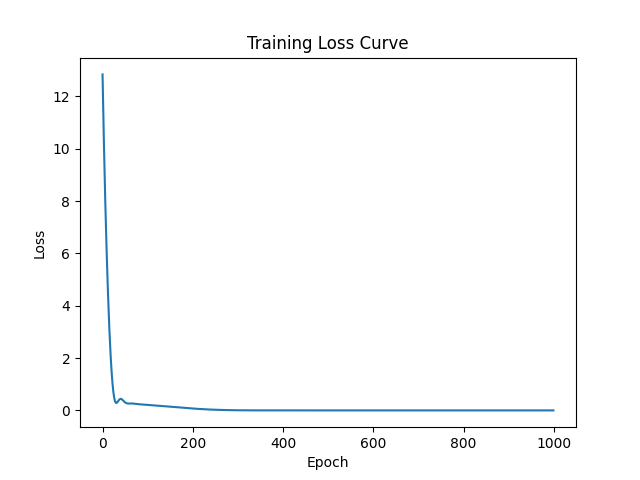

Evolution from manual formulas to a fully-formed architecture. The model now defines its own logic through hidden layers and non-linear activations.
nn.Linear layers.nn.ReLU activation to introduce non-linearity (The "Bends").[Batch, Feature] shapes.lr = 0.01 over 1000 epochs to prevent NaN.Unlike Day 3's bumpy descent, this model showed high stability. By giving the system more "room to think" (10 neurons vs 1 formula), the loss hit near-perfection ($2.9 \times 10^{-13}$) with a smooth, singular correction bump.
Neural Training Loss (Convergence at 400 epochs):
